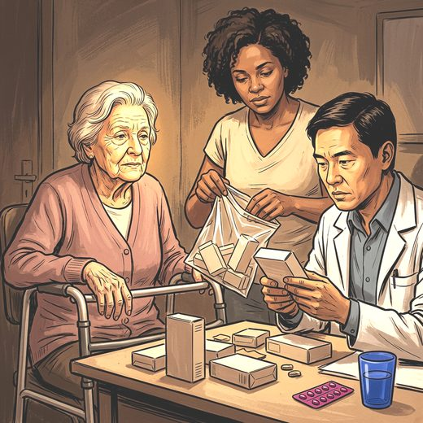

Consulta rápida à beira do leito
Condutas, doses e interações.
Referências da aula · 9
- 2023 American Geriatrics Society Beers Criteria® Update Expert Panel. American Geriatrics Society 2023 updated AGS Beers Criteria® for potentially inappropriate medication use in older adults. J Am Geriatr Soc. 2023;71(7):2052-81. PMID 37139824. doi:10.1111/jgs.18372.PubMedDOI
- O'Mahony D, Cherubini A, Guiteras AR, Denkinger M, Beuscart JB, Onder G, et al. STOPP/START criteria for potentially inappropriate prescribing in older people: version 3. Eur Geriatr Med. 2023;14(4):625-32. PMID 37256475. doi:10.1007/s41999-023-00777-y.PubMedDOI
- Masnoon N, Shakib S, Kalisch-Ellett L, Caughey GE. What is polypharmacy? A systematic review of definitions. BMC Geriatr. 2017;17:230. PMID 29017448. doi:10.1186/s12877-017-0621-2.PubMedDOI
- Palmer K, Villani ER, Vetrano DL, Cherubini A, Cruz-Jentoft AJ, Curtin D, et al. Association of polypharmacy and hyperpolypharmacy with frailty states: a systematic review and meta-analysis. Eur Geriatr Med. 2019;10(1):9-36. PMID 32720270. doi:10.1007/s41999-018-0124-5.PubMedDOI
- Gutiérrez-Valencia M, Izquierdo M, Cesari M, Casas-Herrero Á, Inzitari M, Martínez-Velilla N. The relationship between frailty and polypharmacy in older people: a systematic review. Br J Clin Pharmacol. 2018;84(7):1432-44. PMID 29575094. doi:10.1111/bcp.13590.PubMedDOI
- Scott IA, Hilmer SN, Reeve E, Potter K, Le Couteur D, Rigby D, et al. Reducing inappropriate polypharmacy: the process of deprescribing. JAMA Intern Med. 2015;175(5):827-34. PMID 25798731. doi:10.1001/jamainternmed.2015.0324.PubMedDOI
- Bloomfield HE, Greer N, Linsky AM, Bolduc J, Naidl T, Vardeny O, et al. Deprescribing for community-dwelling older adults: a systematic review and meta-analysis. J Gen Intern Med. 2020;35(11):3323-32. PMID 32820421. doi:10.1007/s11606-020-06089-2.PubMedDOI
- Inker LA, Eneanya ND, Coresh J, Tighiouart H, Wang D, Sang Y, et al. New creatinine- and cystatin C-based equations to estimate GFR without race. N Engl J Med. 2021;385(19):1737-49. PMID 34554658. doi:10.1056/NEJMoa2102953.PubMedDOI
- Kidney Disease: Improving Global Outcomes (KDIGO) CKD Work Group. KDIGO 2024 clinical practice guideline for the evaluation and management of chronic kidney disease. Kidney Int. 2024;105(4S):S117-S314. PMID 38490803. doi:10.1016/j.kint.2023.10.018.PubMedDOI
Documentos oficiais
Leis e publicações do Ministério da Saúde sobre o cuidado da pessoa idosa, de acesso livre.
Abrir os documentos